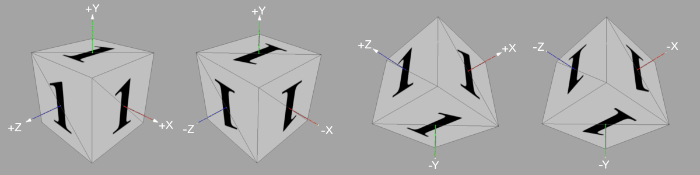
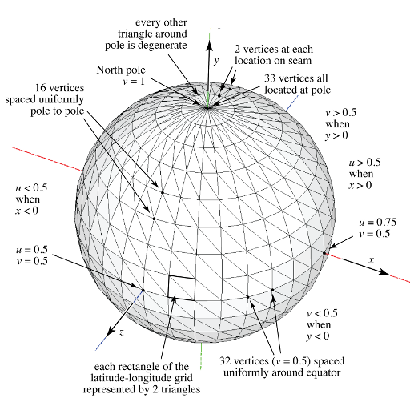

PA 1: Meshes
Due: Wednesday February 8th 2017 (11:59pm)
Do this project alone or in groups of two, as you prefer. You can use Piazza to help pair yourselves up.
Introduction
In this assignment you will learn about the most widely used way to
represent surfaces for graphics: triangle meshes. A triangle mesh is
just a collection of triangles in 3D, but the key thing that makes it a mesh
rather than just a bag of triangles is that the triangles are connected to one
another to form a seamless surface. The textbook and lecture slides discuss
the data structures used for storing and manipulating triangle meshes, and in
this assignment we will work with the simplest kind of structure: an indexed
triangle mesh.
Your job in this assignment is to write a simple mesh generation and
processing utility that is capable of building triangle meshes to approximate
some simple curved surfaces, and also can add some information to existing
meshes. It reads and writes meshes stored in the popular OBJ file format, a
text format with one line for each vertex and face in the mesh.
Building a mesh
The written part of this assignment is a warmup for generating more complex
meshes. Suppose we wish to generate a mesh for a loaded die as shown below:

4 different views of our loaded die, represented as a triangle mesh.
The cube extends from -1 to 1 in each of the x, y, and
z directions. Each face has the following texture applied:

The texture to apply to each face of the cube. In UV-space, the lower
left corner of the image is the origin, and the top right corner of the image is the
point (1,1). The U direction extends horizontally across the image,
the V direction extends vertically.
We could represent this mesh by listing out each triangle. Each triangle would be specified
by 3 points in 3D space (i.e., the locations of each of its vertices), 3 points in 2D space
(i.e., the UV-space texture coordinates of each of its vertices), and 3 unit-length 3D
vectors (i.e., the normals of the surface at each vertex). This is sufficient
to represent this mesh, but you may notice that we are repeating some information; for
instance, the position of each corner of the cube is shared by at least 3 different triangles.
Additionally, each triangle represents a flat surface, and thus the normals at each of its vertices
are all equivalent. (Later, we will use triangles to approximate curved surfaces where this is not
the case.) We can reduce this repetition by introducing an indexing scheme.
The OBJ file format is one such indexing scheme, and is the one we'll be using in this
assignment. In this format, the positions of all vertices are listed first, and then triangles
are specified by providing 3 integers that index into this list of positions. Texture coordinates
and normals are abstracted similarly; thus, each triangle is specified by 3 position indices, 3 texture
coordinate indices, and 3 normal indices.
For the written portion of this assignment, create an OBJ file that represents the die triangle
mesh complete with texture coordinates. Your OBJ file will need:
- The coordinates of the 8 vertices in 3D space;
- The 4 texture coordinates of the vertices;
- The 6 normals of the vertices; and
- The position, texture coordinate, and normal indices of the 12 triangles that make up the mesh.
A vertex position is specified on a single line by the letter "v" followed by 3 floating point
numbers that represent the x, y, and z coordinates of the point.
A texture coordinate is specified by the letters "vt" followed by 2 floating point numbers
that represent the u and v coordinates respectively.
A vertex normal is specified by the letters "vn" followed by 3 floating point numbers
that represent the normal vector. (The OBJ file format does not require that these be
unit length, but we will require it for this assignment.)
Triangles are specified with the letter f followed by 3 groups of indices.
Groups of indices can be a single integer (indexing the vertex position), two integers
separated by a "/" (indexing the vertex position and texture coordinate respectively),
two integers separated by "//" (indexing the vertex position and vertex normal respectively),
and three integers each separated with a "/" (indexing the position, texture coordinates, and
normals). Please note all indices the OBJ file format are 1-based!
Vertices should be specified in counter-clockwise order, assuming you are looking down
at the outer surface of the triangle (i.e., the triangle's normal is pointed towards you).
For example, a single triangle in the xz-plane, facing towards +y is:
v 0.0 0.0 0.0
v 0.0 0.0 1.0
v 1.0 0.0 0.0
vt 0.0 0.0
vt 0.0 1.0
vt 1.0 0.0
vn 0.0 1.0 0.0
f 1/1/1 2/2/1 3/3/1
Note that all vertices have the same normal, so we can just specify it once, and refer to that
definition 3 times.
When creating your OBJ file, make sure the cube is tessellated as shown above; that is, make sure all the
triangles are oriented as shown. Additionally, pay attention to the way the "1" is oriented on each face.
For full credit, your solution should appear exactly as shown above.
Specification
For this assignment, you will create a command line utility called MeshGen. Its usage is:
(1) java MeshGen -g <sphere|cylinder|torus> [-n <divisionsLatitude>] [-m <divisionsLongitude>] -o <outfile.obj>
(2) java MeshGen -i <infile.obj> -o <outfile.obj>
For usage (1), the first required argument is the geometry specifier, and the second is the output filename. If the geometry specifier is one of the fixed strings sphere, cylinder, or torus, a triangle mesh is generated that approximates that shape, where the number of triangles generated is controlled by the optional -n and -m options (details below), and written to the output file.
A triangle mesh that is an approximation of a smooth surface should have
normal vectors stored at the vertices that indicate the direction normal to the
exact surface at that point. When generating the predefined shapes, you
generate points that are on the surface, and for each you should also calculate
the normal vector that is perpendicular to the surface at that point. Additionally,
the generated meshes will have texture coordinates.
For usage (2), the user provides an input OBJ mesh file, which the program reads in.
The mesh is assumed to have no normals (if normals are included in the input file, they
are ignored). The program then generates approximate normals at each vertex as described
below, and writes the resulting mesh to the user-provided output file.
Details of predefined geometries
Cylinder
The cylinder has radius 1 and height 2 and is centered at
the origin; its longitudinal axis is aligned with the y-axis. It is tessellated with
n divisions arranged radially around the outer surface. The two ends of the cylinder are
closed by disc-shaped caps parallel to the xz-plane. The vertices around the rims of the cylinder are
duplicated to allow discontinuities in the normals and texture coordinates.
Each cap consists of one set of the duplicated vertices around the appropriate
rim as well as a single point where the cap intersects the y-axis. This point is
incorporated into each triangle that makes up the cap.
Along the cylinder's shell (i.e., excluding its caps), texture coordinates in the u dimension run from
0 to 1 in a counterclockwise direction as viewed from the +y
direction. There is a seam (where u=0 meets u=1) along vertices that have a z-coordinate of -1.
Multiple vertices occur at the same position in space to allow this discontinuity.
Coordinates run from 0 to 0.5 in the v dimension, increasing in the +y
direction. The texture coordinates for the two caps are circles inscribed in
the upper-left (for the -y cap) and upper-right (for the +y cap) quadrants of
the unit square in the uv-plane, with the +u direction corresponding to the +x direction in 3D
space, and the +v direction corresponding to the -z direction.
Sphere
The sphere has radius 1 and is centered at the origin in 3D
coordinates. It is tessellated in latitude-longitude fashion, with n divisions
around the equator and m divisions from pole to pole along each line of
longitude. The North pole is at (0,1,0), the South pole at (0,-1,0), and
points on the Greenwich meridian have coordinates (0,y,z) with z > 0. The
mesh is generated with vertex normals that are normal to the exact sphere, and
with texture coordinates (u,v) where u depends only on longitude, with u=0 at
longitude 180 degree West and u=1 at 180 degrees East, and where v depends only on
latitude, with v=0 at the South Pole and v=1 at the North pole. Each
quadrilateral formed by two adjacent longitude lines and two adjacent latitude
lines is divided on the diagonal to form two triangles. The vertices along the
180th meridian are duplicated: one vertex has texture coordinate u=0 and
the other has texture coordinate u=1, to enable correct wrapping of a
tileable texture image across the seam. The vertices at the poles are
duplicated n+1 times, to enable nearly-appropriate texture in the row of
triangles adjacent to the pole.


Specs illustration for the cylinder and sphere (for the case of n = 32 and m = 16)
Torus
A torus is a doughnut-shaped
surface defined by a major radius, affecting the size of the hole, and a minor radius,
affecting the thickness of the ring. Your code should create a torus with major radius 1
and minor radius r (controlled by the
-r flag with a default of 0.25). Its u coordinates are
like the sphere, and the v coordinate runs from 0 to 1
with a seam on the inside of the torus, with the direction arranged so that the
texture is right-reading from the outside (i.e., the texture is not flipped when mapped to the surface).
Like the sphere, it has a seam on the -z half of the yz-plane, and it has a similar seam around the
inner surface of the doughnut hole; vertices along each seam are duplicated twofold and a
single vertex, at the position (0, 0, r-1) where the seams meet, is duplicated fourfold.
Computing vertex normals
For a mesh that has vertex positions and triangles, but no vertex normals, one often wants to compute vertex normals so that the mesh can appear smooth. But since the original surface which the mesh approximates is forgotten (if there even was one), we need some way to make up plausible normals. There are a number of ways to do this, and we'll use a simple one for this assignment: the normal at a vertex is the average of the geometric normals of the triangles that share this vertex.
Your first thought might be to do this as a loop over vertices, with an inner loop over the triangles that share that vertex:
for each vertex v
normal[v] = (0,0,0)
for each triangle t around v
normal[v] += normal of triangle t
normal[v].normalize()
With the appropriate data structures, this is possible, but in our case there's no efficient way to do the inner loop: our data structure tells us what vertices belong to a triangle, but the only way to find triangles that belong to a vertex is to search through the whole list of triangles. This is possible but would be quadratic in the mesh size, which is bad news for large meshes.
However, it's simple to do it with the loops interchanged:
for each vertex v
normal[v] = (0,0,0)
for each triangle t
for each vertex v around t
normal[v] += normal of triangle t
for each vertex v
normal[v].normalize()
This way the inner loop can efficiently visit just the necessary vertices. Nifty!
Framework
The framework is available on a public Git repository: https://github.com/CornellCS4620/Framework.git
If you have not used Git before, you can follow the tutorial
here, or ask a TA for assistance. We encourage you to use version control though we request that you refrain from publicly sharing your class repository.
For this first assignment, we provide a small amount of code to help you get started.
It contains data structures for dealing with vectors and meshes stored in the OBJ format.
The math package contains two classes, Vector2 and Vector3, for
dealing with 2D and 3D vectors respectively. They also contain many methods such as vector
addition and subtraction, dot and cross products, and component-wise operators. If you need
to modify a vector in some way, chances are there is already a method that will do what you
want--there is rarely a need to extract the individual components of a vector.
Please be aware that these classes contain in-place methods, even if they return a vector!
This means that it is easy to make a mistake like the following:
Vector3 a = new Vector3(...), b = new Vector3(...);
Vector3 c = a.add(b); // Don't do this!
In the snippet above, the add() method modifies a and assigns it to c. This
is almost certainly not what you want. Instead, consider the following code:
Vector3 c = a.clone().add(b);
This creates a copy of a and modifies it instead, leaving the original a unchanged.
This may seem awkward, but it allows for very concise code when performing many successive operations on vectors:
x.add(y).cross(z).normalize();
When in doubt, please consult the Javadocs. They're there for your benefit!
The meshgen package contains data structures for operating on OBJ-style meshes.
They are very similar in structure to the OBJ file itself; vertex positions are stored as Vector3s
in an ArrayList, and similarly for vertex texture coordinates and vertex normals. Faces of
the mesh are represented via the OBJFace class, which defines a polygon on the mesh
by listing integers for each vertex which index into the position, texture coordinate, and normal arrays.
This structure allows you to reuse repeated positions, texture coordinates, and normals, which
may come in handy when generating meshes with seams (i.e., meshes with vertices that share positions and
normals, but not texture coordinates.) However, you are not required to take advantage of such
optimizations; creating a mesh where each vertex has a unique triad of position, texture coordinate, and normal
is a valid solution.
The OBJMesh class provides methods for reading and writing OBJ files; thus, to create a mesh, you simply
create a new instance of the OBJMesh class, fill in the appropriate class members, and call writeOBJ().
The class supports both 0- and 1-based indexing, allowing you to either conform to the Java
standard or OBJ standard as you set the mesh data. You can switch between indexing schemes via the indexBase
static variable, which by default is 0. Either way, meshes are automatically converted to 1-based indexing before
being written to file.
Some useful methods include the setVertex() method in OBJFace, which allows you to set the
indices for the position, texture coordinate, and normal for a particular vertex simultaneously. Also of note
are OBJMesh's getPosition(), getUV(), and getNormal() methods, which
retrieve the appropriate vectors from the mesh data, taking the indexing issues mentioned above into account.
Testing your program
Since your program just writes a file full of inscrutable numbers, you need some way to look at the results. For this you can use MeshLab. This program allows you to view the output OBJ files, and test that the texture coordinates and vertex normals are set correctly.
(Here are a few more programs that might be worth checking out: Blender, ObjViewer, p3d.in ).
Warning: Blender discards the normals stored in the OBJ file and as such is not a good tool to check whether your normals are correct.
Caution: Blender by default will rotate your mesh by 90 degrees around the x axis so that it displays right way up in Blender's z-is-up world.
In addition, the OBJMesh class contains the isValid() method to check that your
mesh conforms to the OBJ standard, and the compare() method to check if two different meshes
are equivalent (ignoring the order in which faces are defined or differences in index optimization). Thus,
another way to verify your code is correct is to compare your output to reference meshes, which are
provided below. To receive full credit, your output must be equivalent to ours, and generate no warnings
when used with the verbose option. (We will have other
reference meshes to test your code against in addition to the ones provided below.)
Download and unpack the following archive: MeshesTestData.zip
Extensions
There are many opportunities to expand your implementation and receive extra credit. Some ideas are listed below.
- You may have noticed that for the sphere, the triangles get compressed near the poles. Provide an
alternative tessellation approach to create a more even mesh; see
icosphere as an example.
(Note that this feature should be provided in addition to the sphere specification described above.)
- The compare() method provided in the OBJMesh class compares each face in one mesh with
each face in the other until it finds a match. This naive, brute force algorithm
is very slow when given large meshes as input. Provide an alternative method with better performance.
(Can you reduce the complexity from O(n^2) to O(n log n)?)
- Per the OBJ specification, the OBJFace class supports faces that are arbitrary polygons, not
just triangles. However, in many cases, triangles are much nicer to work with. Extend your MeshGen
utility to generate a triangle mesh from an input mesh with polygonal faces. That is, take all faces that have
4 or more vertices and split them into triangles.
- As mentioned above, the OBJ data format allows the reuse of positions, vertex coordinates, and normals
through indexing. However, this reuse is not enforced. Extend your MeshGen utility to take in an
uncompressed OBJ file and remove duplicate positions, texture coordinates, and normals, adjusting vertex
indices as necessary.
- Many algorithms that operate on triangle meshes assume that the mesh is well-behaved; that is, it has some
structure that is more predictable than just a soup of arbitrary triangles. One class of well-behaved mesh
is known as a manifold mesh. Manifold meshes satisfy the following properties:
- Every edge in the mesh borders either 1 or 2 triangles.
- Every vertex in the mesh belongs to a connected set of triangles; that is, if you consider all triangles
that share one particular vertex, you can draw a curve from any triangle to any other triangle
without leaving the surface of the mesh, and without crossing over the vertex. "Bowtie" configurations are
not allowed.
Extend your MeshGen utility to check if an input triangle mesh is manifold or not. As a hint, it may be useful
to create a new data structure which, given the index of a triangle, allows you to quickly find that triangle's
neighboring faces.
If you implement any of the above options, please provide sample input and/or output with your submission
that demonstrates that your code is functioning correctly.
Handing in
Submit a zip file containing your solution using CMS
You should include a readme in your zip that contains:
- You and your partner's names and NetIDs.
- Explanations of any extensions you implemented and incantations to run them via the command line.
- Anything else you want us to know.
Separately submit a zip file containing your paper and pencil on
CMS. The solution for the
paper and pencil parts of the homework will be done alone, and not in
pairs. Please turn that in separately at the appropriate place in CMS.